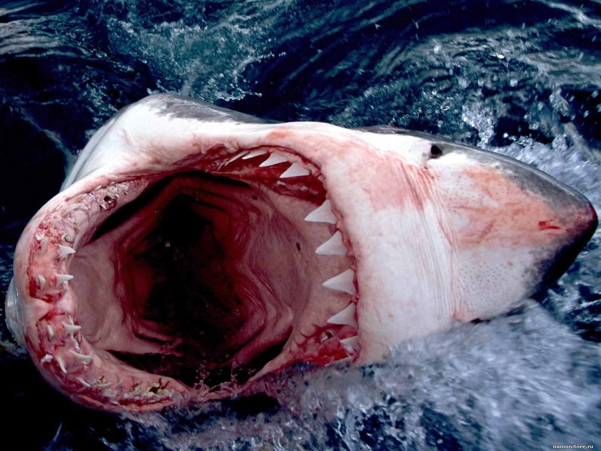

ANATOMÍA
Existen seis estructuras anatómicas importantes en los tiburones, las cuales se describen a continuación con mayor detalle. Todos los tiburones tienen cartílago en su esqueleto en lugar de huesos. Esto es muy diferente a los seres humanos y la mayoría de los tipos de animales terrestres. El cartílago es lo que les permite moverse a una velocidad increíble a través del agua.
Dado que los tiburones no tienen huesos en su anatomia, se basan en dentículos dérmicos en la piel para ayudar a mantener la forma adecuada.
Los tiburones no tienen una mandíbula que se une a su cráneo. En su lugar, se mueve como una pieza separada. La parte superior y la mandíbula inferior pueden trabajar cada una por su cuenta sin la otra en movimiento. Esto le permite al tiburón tener el poder para dar un tirón muy fuerte y ser capaz de pegarse a lo que quiere con firmeza.
Los tiburones tienen muchas filas de dientes, que alcanzan hasta 15 hileras de dientes en los tiburones más grandes. Pueden extraer carne y huesos al instante a cualquier presa sin demasiado esfuerzo. Los tiburones pierden sus dientes todo el tiempo y una de las filas detrás de la que se perdió se moverá para ocupar esa posición.